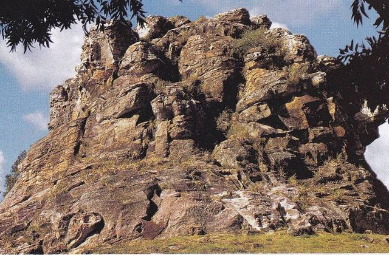
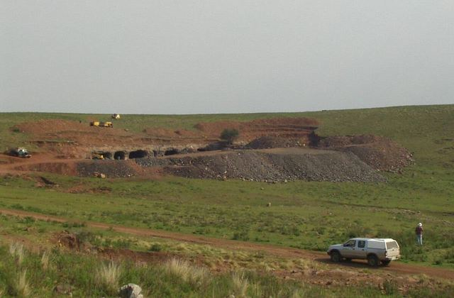
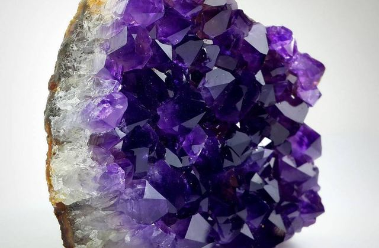

Departamento de Artigas · Uruguay
22 lugares para descubrir
Del río Uruguay a las minas de amatistas: museos, ríos, viejas estaciones de tren, la triple frontera y el carnaval. Cada lugar tiene su historia, sus fotos, sus datos útiles y cómo llegar.
Bella Unión y la triple frontera
 01Estación Fluvial de Bella UniónPuerto de Bella Unión, sobre el río Uruguay
01Estación Fluvial de Bella UniónPuerto de Bella Unión, sobre el río UruguayEl muelle desde donde salen los paseos náuticos por la triple frontera, las islas del río y Rincón de Franquía.
 02Parque RiveraCosta del río Uruguay, Bella Unión
02Parque RiveraCosta del río Uruguay, Bella UniónUn parque con eucaliptos sobre la costa del río Uruguay, en el oeste de Bella Unión, con parrilleros y juegos para niños.
 03Museo Santa Rosa del CuareimEnrique Ferreira 1164, Bella Unión
03Museo Santa Rosa del CuareimEnrique Ferreira 1164, Bella UniónUn museo privado con una colección arqueológica de la prehistoria de la zona, reunida durante más de treinta años.
 04Isla Brasilera y la triple fronteraConfluencia del río Cuareim con el río Uruguay
04Isla Brasilera y la triple fronteraConfluencia del río Cuareim con el río UruguayUna isla deshabitada justo donde se juntan Uruguay, Argentina y Brasil. La administra Brasil y la reclama Uruguay.
 05Rincón de FranquíaAl norte de Bella Unión, en la desembocadura del Cuareim
05Rincón de FranquíaAl norte de Bella Unión, en la desembocadura del CuareimÁrea protegida en la triple frontera, con monte, humedales y más de 220 especies de aves registradas.
Baltasar Brum y el norte del Cuareim
 06Estación de Baltasar BrumBaltasar Brum, suroeste del departamento
06Estación de Baltasar BrumBaltasar Brum, suroeste del departamentoEl cruce ferroviario donde la vía se abre en dos: un ramal a Bella Unión y otro a Artigas. En la vieja estación funciona un museo.
 07Codo del CuareimExtremo norte del departamento, sobre el río Cuareim
07Codo del CuareimExtremo norte del departamento, sobre el río CuareimEl punto más al norte del Uruguay, en una curva del río que nos separa de Brasil.
 08Cueva del IndioEstancia El Indio, a unos 20 km de Topador
08Cueva del IndioEstancia El Indio, a unos 20 km de TopadorUn refugio de piedra a orillas del Cuareim, ligado a la memoria de los charrúas que sobrevivieron a Salsipuedes.
Javier de Viana y el arroyo Tres Cruces
 09Puente Tres CrucesArroyo Tres Cruces, Ruta 30 km 95, junto a Javier de Viana
09Puente Tres CrucesArroyo Tres Cruces, Ruta 30 km 95, junto a Javier de VianaEl «puente viejo» sobre el arroyo Tres Cruces, entre monte ribereño y agua que corre: un lugar tranquilo para pasar el día.
 10Museo Ferroviario «Bibiano Gómez»Antigua estación «Tres Cruces», Ruta 30, kilómetro 96, Javier de Viana
10Museo Ferroviario «Bibiano Gómez»Antigua estación «Tres Cruces», Ruta 30, kilómetro 96, Javier de VianaUn lugar donde la historia del ferrocarril sigue viva y la memoria de un pueblo permanece en el tiempo.
 11Capilla Santa MargaritaJavier de Viana, Ruta 30, kilómetro 96
11Capilla Santa MargaritaJavier de Viana, Ruta 30, kilómetro 96La capilla del pueblo, fundada en 1928: un espacio de encuentro y fe para la comunidad de Javier de Viana.
 12CEI Javier de VianaRuta 30, kilómetro 97,5, Javier de Viana
12CEI Javier de VianaRuta 30, kilómetro 97,5, Javier de VianaEscuela rural y liceo en un mismo centro, desde Inicial 3 hasta 1.º de EMS, con huertas e invernáculos como aulas abiertas.
 13Destacamento Policial N.º 12Ruta 30, kilómetro 97, Javier de Viana
13Destacamento Policial N.º 12Ruta 30, kilómetro 97, Javier de VianaInaugurado en 1973 como Seccional Policial 12.ª, forma parte de la historia de Javier de Viana y de la vida de su comunidad.
Ciudad de Artigas
 14Plaza Artigas e Iglesia San EugenioCentro de la ciudad de Artigas
14Plaza Artigas e Iglesia San EugenioCentro de la ciudad de ArtigasEl corazón de la ciudad fundada en 1852 como San Eugenio del Cuareim, con su iglesia más antigua y un monumento revestido de ágatas.
 15Jefatura de Policía de ArtigasAv. Carlos Lecueder y Amaro Ferreira Ramos, ciudad de Artigas
15Jefatura de Policía de ArtigasAv. Carlos Lecueder y Amaro Ferreira Ramos, ciudad de ArtigasUn edificio de 1896 que parece un castillo medieval, con torres almenadas y un reloj traído de París.
 16Museo Histórico DepartamentalJosé Pedro Varela 278, esquina Av. Lecueder, ciudad de Artigas
16Museo Histórico DepartamentalJosé Pedro Varela 278, esquina Av. Lecueder, ciudad de ArtigasFósiles de megafauna, objetos y documentos de la historia del departamento y muestras de arte, con entrada gratuita.
 17Carnaval de ArtigasAvenida Carlos Lecueder, ciudad de Artigas
17Carnaval de ArtigasAvenida Carlos Lecueder, ciudad de ArtigasEscuelas de samba, carros alegóricos y baterías desfilan por la avenida principal, en una fiesta inspirada en el carnaval de Río de Janeiro.
 18Museo de la Piedra PreciosaAv. Coronel Carlos Lecueder 157, esquina Amaro F. Ramos, ciudad de Artigas
18Museo de la Piedra PreciosaAv. Coronel Carlos Lecueder 157, esquina Amaro F. Ramos, ciudad de ArtigasUn centro cultural interactivo que cuenta la historia de las ágatas y amatistas, desde los volcanes hasta la exportación.
 19Paseo 7 de Setiembre y Puente de la ConcordiaCostanera del río Cuareim, ciudad de Artigas
19Paseo 7 de Setiembre y Puente de la ConcordiaCostanera del río Cuareim, ciudad de ArtigasEl gran parque sobre el río Cuareim y el puente que une Artigas con Quaraí, del lado brasileño.
Piedra Pintada y la zona de las amatistas

20Piedra PintadaA unos 17 km de la ciudad de ArtigasUna mole de arenisca de 19 metros, rodeada de monte nativo, dentro del Parque Congreso de Abril.

21Safari Minero de ArtigasZona minera de Catalán, a unos 40 km de la ciudad de ArtigasUna excursión guiada a las minas de ágatas y amatistas: túneles, canteras a cielo abierto y talleres donde se pulen las piedras.

22Minas de amatistas de Los CatalanesZona de Catalán, a unos 50 km de Artigas por Ruta 30El distrito donde se extraen las amatistas que hicieron famoso a Artigas, en minas a cielo abierto y en galería.